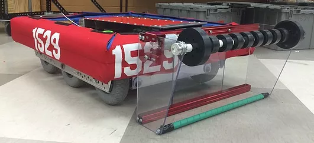
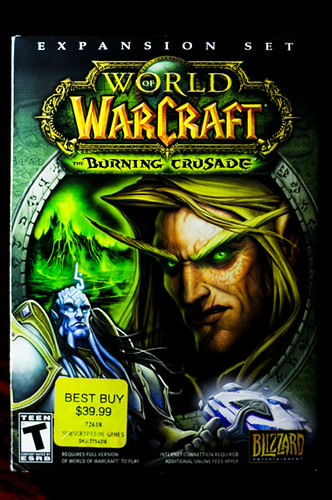

About Me
Hi, I'm Athena Henderson! Currently I am a rising junior at Rose-Hulman Institute of Technology pursuing a bachelor's degree in Computer Engineering. I'm hoping to do a double or even triple major in Computer Science and Software Engineering. I'm making this website for my CSSE280 - Introduction to Web Development course over the summer. Usually, over the summer, I live at home with my father and work part time at my old high school job at Dairy Queen. I'm an overall nerd, typically invested in anything pop culture related, or maybe a bit more obscure: books, tv, movies, video games, music, art. You name it, and I'll probably love it!
Up To Now
I was born in Indianapolis, IN on December 26th, 2000. My grandparents have lived in the same home since I was born, and I lived there up until I was four. My mom married my step-father when I was five on a cruise that took us to Barzil, the Caymen Islands, and another country I can't recall. I only got off the boat in the Caymen Islands since that was where my mom and step-dad had their wedding officiated. Elementary school, I attended Southport High School, and I absolutely loved it there. I made several friends, but when we went off to middle school, most of us drifted apart.
Middle school, I attended Southport Middle School, and that's where I met some of my closest friends. In sixth grade, I met my best friend of all time Luna, but we didn't start to talk to each other until the following year when we shared the same German class. In that same German class was Morgan who also became close friends with me. In eigth grade, we all shared an English class with Abby. We were our own little gang of misfits.
In high school, I attended Southport High School, and there I joined the FRC team. FRC stands for FIRST Robotics Competition, where FIRST stands for For Inspiration and Recognition of Technology. It's an organization dedicated to educated K-12 students on their future in STEAM fields. Our team name was FRC 1529, the CyberCards. I held three positions on the team, Controls Lead, Team Captain, and Operations Captain. To the right is the robot we built freshman year. On top of robotics, I did color guard my freshman year but quit in the winter. Junior year, I added on the bowling team, thanks to one of my newest friends at the time, Melissa, who was an Indiana State Champion bowler. I also joined a self-defense class taught by my AP U.S. History and AP World History teacher as well as the debate team. Senior year, I got a part time job at the local Dairy Queen as well.
Academically, I took a total of twelve advanced placement classes and one dual credit class over the course of my four years. Including:
Sophomore Year
- Physics 1: 2
- U.S. History: 3
- World History: 3
Junior Year
- Physics C: Mechanics: 3
- Psychology: 3
- English Language & Composition: 3
- Calculus AB: 5
Senior Year
- English Literature & Composition: 3
- Microeconomics + Macroeconomics: 4
- U.S. Government: 4
- Calculus BC: 5
After graduating high school, I went on to Rose-Hulman Institute of Technology to pursue a degree in Computer Engineering. I joined the WMHD Radio Club and soon received an officer position for the club, Communications Director. I also joined the FRC team out of the BIC at Rose as a College Mentor. So, now, instead of working on the team to learn more about STEAM careers for me, it's my job to help teach students STEAM skills and explore STEAM career opportunities. I also joined WOLFPAC which stands for Women of Like Fields Passionate ABout Computing, or as I like to phrase it, a community of women who like to geek out over coding.
Future?
In the future, my plan is to graduate with a triple major and four minors plus a semiconductor certificate from Rose-Hulman and find a career in the computing industry. Specifically, in designing, maufacturing, or testing computer parts. Such as: CPUs, graphics cards, IC chips. Really, anything to do with innovation in computers, I'm there. I also maybe hope to open my own computer repaire shop on the side to repair computers in my free time for fun! Ideally, anything to do with computers, I'm interested, and I always want to learn more. I also have recently entertained the idea of pursuing my Masters's or a PhD in Computer Engineering, specifically Computer Architecture as that is what peaks my interest especially.
Passions
OVerall, I like to describe myself as a huge nerd. Anything I can nerd out about with someone, or anything you can be apart of a fandom for, I'm there. I'm super interested. Video games, YouTubers, Tv shows, movies, bands/artists, and books.
Video Games
My all time favorite game is Legend of Zelda: WindWaker, but I also love to play Minecraft, World of Warcraft, Warframe, GTA V, and Skyrim in my free time. I generally say my favorite genre of video games is RPG, but I really love all sorts of games. I can sit down and play a first-person shooter or even a real-time strategy game occassionally. Again, this loops back to, anything I can get my hands on, I'm super excited to play and explore.
YouTube
One of my favorite pasttimes is watching YouTube, specifically the gaming community on YouTube. Some of my favorite content creators include but defintiely aren't limited to The Creatures, Dreamwastaken, Wilbur Soot, Sapnap, Karl Jacobs, Game Grumps, Cow Chop, and Captainsparklez. Some other creators I watch that aren't necessarily in the gaming community include Aaron Doh, Dan Howell, ellenawhat, ERB, React, and MrBeast.